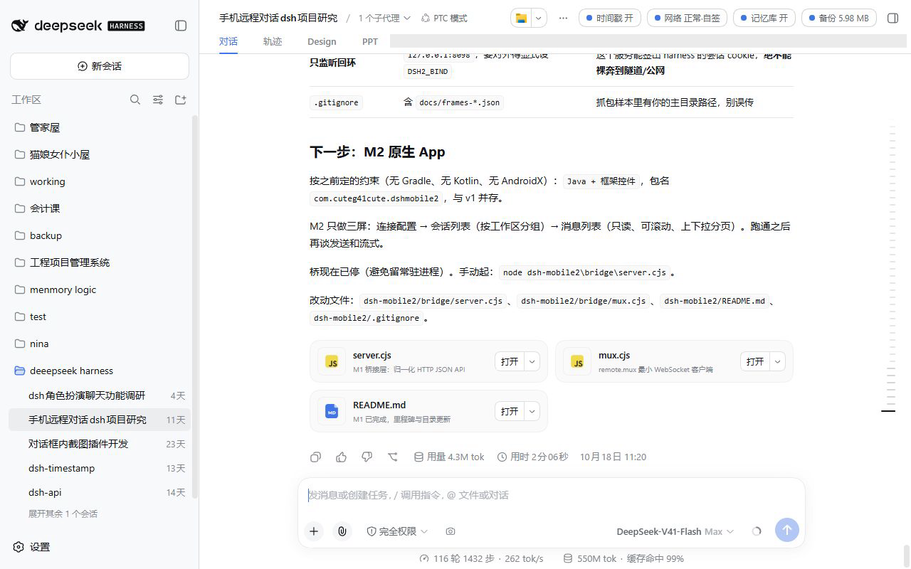
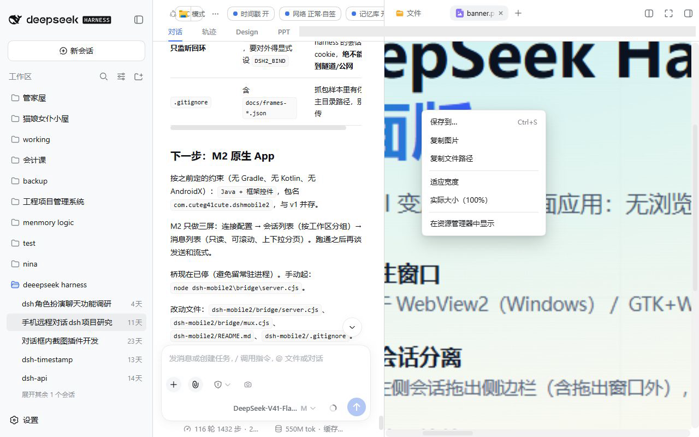

把 DeepSeek Harness
变成真正的桌面应用
没有浏览器、没有地址栏、没有控制台窗口：双击就是一个独立应用。 会话可以拖出来并排看，右栏预览能缩放、能右键保存、能拖进资源管理器； Linux 端连 Node 与 dsh 都装在你指定的目录里，卸载就是删掉那一个文件夹。
# Linux 便携安装（Windows 用 MSI）
bash linux/install.sh --prefix ~/.local/opt/deepseek-harness

一个窗口，不是一堆标签页
Windows 用 Edge WebView2，Linux 用 GTK3 + WebKitGTK，装的是同一个产品界面，外面套一层真正的应用外壳。
双击即用，关掉不等于退出
没有地址栏和标签栏；单实例运行——重复双击只会唤醒已有窗口。点 X 默认收进托盘，服务在后台继续跑；要退出走托盘菜单。
- 重复启动只唤起现有窗口，不会开出第二个
- 托盘菜单：显示窗口 / 退出；退出时才停掉本次启动的服务
- 加载时有细进度条；Web 认证 cookie 由桌面端自动签发（dsh ≥ 0.1.5 也能直接进）
- 服务已经在跑（例如你自己开的 dsh web）时，只开窗口、不动那个服务
产品让你滚动看图，我们让它能缩放
右栏通常只有 600px，而一张手机长截图是 1373×3051——产品按原始尺寸塞进去，你只能看到一角。桌面版在这层补上了缩放、平移与加粗的滑动条。
滚轮缩放 · 拖动平移 · 双击适宽
图片：滚轮以光标为锚点缩放（15%–800%），左键拖动 1:1 跟手，双击在「适宽 / 1:1」间切换。PDF：单滚轮仍然交还产品上下翻页，Ctrl + 滚轮才缩放，而且是所有页一起缩放。
- 右栏滑动条从产品的 8px 加粗到 14px，好拖
- PDF 逐页按绝对像素重排，放大后仍可横向滚动，不会把后几页缩回去
- 换文件 / 收起右栏 / 解绑时逐项还原，不残留样式
- 只接管图片与 PDF；文本、代码、日志、文件树保持产品的原生行为
右键就是「保存到…」，默认落在桌面
在右栏任何预览上右键，弹出的是我们自己的菜单；选「保存到…」（或直接 Ctrl+S）会调起系统原生的另存为对话框，默认目录是桌面，文件名与类型都已预填。
- 逐字节复制原文件，不是把页面内容重新编码
- 图片：复制图片（剪贴板里同时是位图与文件）、复制文件路径、在资源管理器中定位
- 文本 / 代码 / Markdown：复制、全选，与原来的阅读习惯一致
- 页面拿不到「任意写」的能力：只把原文件路径交给宿主，由用户选路径、由宿主复制
- 输入框、链接、可编辑区域上的右键仍然是产品自己的菜单

同一只手，两个方向
拖出去是「保存一份」，拖回来是「发给它」。两个方向都由宿主参与，因为浏览器给不了真正的文件句柄。
文件树 / 交付卡 → 资源管理器、桌面、聊天窗口
从右侧文件树拖任意一行（文件或文件夹），或从交付卡片拖出一个文件，落到资源管理器、桌面、微信、邮件里就是复制一份：Windows 用原生 OLE 拖放（CF_HDROP），只给 Copy 效果，不会把工作区里的原文件搬走。
- 数据里同时带文本路径，所以拖回本窗口时页面还认得它
- 预览不参与拖拽——预览里的左键拖动是「平移」，两者抢手势会互相打架
拖进输入框：文件变附件，文件夹变路径
拖进会话输入框时：文件直接变成待发送附件（接产品自己的附件管线）；文件夹则是把绝对路径写进输入框——这条对「让 agent 去这个目录干活」特别顺。
- 输入框是 Lexical：先合成一次真实点击、再 execCommand('insertText')，并且在下一个任务里做
- 万一仍插不进去：自动把路径放进剪贴板，并提示 Ctrl+V
- 从资源管理器拖文件夹进来拿不到绝对路径（浏览器安全限制），此时会提示「请从右侧文件列表拖」
不接管系统，只占你指的那一个目录
Node、dsh、pnpm 都装进 --prefix 里；DSH_HOME 也在实例目录内。系统里只保留 GUI 库（pygobject / GTK / WebKitGTK 无法便携化），安装器会检查并给出 apt 命令。
一条命令，一个目录，卸载就删掉它
首次联网把 Node 与 dsh 拉进前缀，之后启动完全离线。想换位置就换个 prefix 重装；想回滚就是删目录，不会留下半个全局安装。
# 装到指定目录，并顺手预热一次服务 bash linux/install.sh --prefix /opt/deepseek-harness --warmup # 卸载 = 删掉这个目录 bash linux/install.sh --prefix /opt/deepseek-harness --uninstall
/opt/deepseek-harness/ ├─ bin/dsh bin/dsh-desktop # 启动器 ├─ node/ # 便携 Node ├─ app/ # @deepseek-ai/dsh ├─ tools/ # pnpm（插件用） ├─ share/ # 窗口程序与注入脚本 ├─ dsh-home/ # DSH_HOME（会话/配置） ├─ logs/ # web.log · desktop.log └─ install.json # 名称·端口·版本
多开、多版本，一个图形界面管完
每个实例独立目录、独立端口、独立 dsh-home，可以同时跑好几套；界面与命令行共用同一套核心，排障时能直接脚本化。
新建 · 启停 · 开窗 · 更新 · 修复 · 卸载
版本下拉是可滚动列表，默认选中 latest（最新的非 alpha 版本，由管理器联网解析）；安装/更新/修复期间顶部有脉冲进度条，版本列表在后台拉取，界面不会卡死。
- 新建时可自选安装目录、显示名、端口（默认第一个空闲）、dsh 版本、Node 版本
- 「打开窗口」用实例自带的启动器；启动器输出写进 logs/desktop.log，起不来会直接把原因回报到日志面板
- 「修复」补齐缺失的 Node / dsh / 窗口文件 / 启动器，并补跑被 npm 11 拦下的 install scripts
- CLI 同源：dsh-manager --headless list|install|start|stop|update|repair|uninstall
sudo apt install ./dsh-manager_1.0.3_all.deb
同一套注入脚本，两层不同的窗口壳
预览增强只有一份源码（tools/preview-probe/preview-tools.js），Windows 嵌进 C# 宿主、Linux 由 Python 窗口注入；差异集中在「谁来做系统动作」。
| 能力 | Windows | Linux |
|---|---|---|
| 窗口内核 | Microsoft Edge WebView2 | GTK3 + WebKitGTK（4.1 / 4.0） |
| 预览缩放 · 平移 · 加粗滑动条 | ✓ | ✓ 同一份脚本 |
| 右键菜单 + 原生「保存到…」（默认桌面） | WebView2 + SaveFileDialog | WebKitGTK + GTK FileChooser |
| 拖到文件管理器 / 拖进输入框 | 宿主 OLE 拖放（CF_HDROP） | 原生 HTML5 拖拽 + text/uri-list |
| 会话拖拽分离 · 多窗口 · 标题镜像 | ✓ | ✓ |
| 单实例 · 托盘 · 加载进度 · 认证 cookie | ✓ | ✓ |
| 安装方式 | MSI（per-user，无需管理员）/ installer.ps1 | install.sh：Node 与 dsh 都装进指定前缀 |
| 额外系统依赖 | WebView2 Runtime（Win11 自带） | python3-gi · GTK3 · WebKitGTK |
三种装法，按你的平台选
MSI 安装包（推荐）
标准 Windows 安装程序，per-user 安装、不需要管理员权限；安装向导会自动检测本机是否已有 DeepSeek Harness，没有时可以一键帮着装或手动指定路径。
dist\DeepSeek Harness 桌面版 1.2.8.msi
# Release 附件里的同名文件是 ASCII 名：
DeepSeek-Harness-Desktop-1.2.8.msi
install.sh 或管理器 .deb
只想用一个实例：install.sh。想多开、多版本、图形管理：装 dsh-manager 的 deb，然后从应用菜单打开「DeepSeek Harness 管理器」。
sudo apt install ./dsh-manager_1.0.3_all.deb
# 依赖：python3-gi · gir1.2-gtk-3.0 · gir1.2-webkit2-4.1
桌面版周围的几个小东西
桌面版本身只做「窗口 + 增强」，其余能力都是独立仓库的插件或服务，按需装。
时间戳注入
每条提问后注入一条机器可读的时钟上下文，让模型理解「刚才 / 昨天」；按项目可开关。
项目记忆库
把历史问答按关键词召回，注入到当前回合，长时间协作时不容易丢上下文。
对话内截图与标注
选窗口/区域截图，画笔、矩形、箭头、文字标注后直接进附件，省掉「截个图再描述」。
手机接入
电脑上跑一个桥接进程，手机浏览器或 App 连同一套会话；带设备认证与待确认机制。
HTTP 调用接口
把 harness 当服务用：提交任务、轮询状态、取回最终回复与完整对话记录。
会话与文件清理
扫描孤儿会话目录、过期缓存与占空间的构建产物，按项目清理。
哪些是自动化跑过的，哪些只能手动确认
每个功能都有对应的验证脚本；跑不了的部分写清楚，不假装跑过。
| 项目 | 验证方式 | 结果 |
|---|---|---|
| 右键菜单（四类预览） | verify-preview-menu.mjs：无头真实页面 + 真实右键 | 30 / 30 |
| 拖拽手势（四类来源） | verify-drag.mjs --edge：核对发出的路径与数据格式 | 12 / 12 |
| PDF 逐页缩放 | verify-pdf-zoom.mjs：真实 PDF 页、真实输入 | 17–18 / 18 |
| Linux 便携安装 | WSL 实跑：安装 · 幂等重装 · 卸载只清前缀 | 通过 |
| 管理器端到端 | WSL 实跑：装两套实例、多开、修复、更新、停止、卸载 | 通过 |
| OLE 拖放的手感 | 无法在自动化里模拟鼠标落到资源管理器 | 需手动确认一次 |
| 管理器界面（GTK） | 本页截图来自 Windows；管理器界面为结构示意 | 需在 Linux 上目视 |